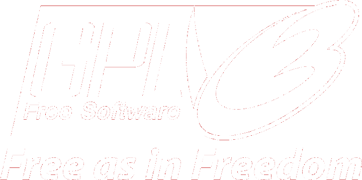

Open Week
Contribuez à un projet Open Source, développez des tâches INGInious, élargissez vos compétences, étoffez votre CV.
Durant le début du mois de Juillet se déroulera la première itération de l'Open Week au sein de l'UCL. Cette semaine consacrée au développement Open Source et à la collaboration a pour but cette année d'améliorer le cours de Java des étudiants de première année et d'initier les étudiants au développement Open Source ainsi qu'à la création de tâches INGInious.
Open Source
Publier un travail sous licence Open Source permet non seulement d'offrir au monde une panoplie d'outils informatiques utiles, mais aussi d'apprendre les conditions d'utilisations et d'intégration d'un travail Open Source à son propre travail, conditions souvent négligées à tort par les programmeurs. La semaine Open Source propose donc aux participants d'acquérir une connaissance de base concernant cet univers.

Finalement, participer à un projet Open Source offre aux développeurs une preuve tangible de leurs connaissances en informatique et d'une expérience pratique sur le terrain, souvent requise chez les employeurs pour l'engagement. Un dépôt Open Source peut ainsi être exposé sur votre CV comme un échantillon de vos compétences, validé et reconnu par les autres comme un travail de qualité.
INGInious
INGInious est la plateforme développée au sein de l'UCL et utilisée par l'UCL et d'autres organismes pour offrir un outil automatisé de correction d'exercices et d'évaluation de connaissances. INGInious est destiné à se développer de plus en plus au travers des différents cours proposés à l'UCL. L'Open Week offre aux étudiants un moyen de participer au déploiement efficace d'INGInious à l'UCL ainsi que d'en comprendre le fonctionnement interne. Les compétences acquises au niveau d'INGInious permettront aux participants de postuler plus aisément aux différents jobs d'étudiants proposés par l'UCL demandant la réalisation de tâches INGInious.
Détente
Durant la semaine seront organisées des activités de détente. Le panel d'activités possibles est large et va de la partie de Bowling à la soirée au restaurant en passant par la dégustation de bières. Ces activités seraient aux frais de l'UCL et ne demanderaient pas de dépense de la part des participants, pour s'assurer de la participation d'un maximum de monde à ces activités. En répondant à ce questionnaire très court, vous pourrez donner votre avis quant aux activitées à organiser si l'événement vous intéresse.

Qui peut participer ?
N'importe quel étudiant qui a passé ou va passer cette année en juin ou en septembre sa "deuxième année" de bâchelier en informatique peut participer à l'Open Week. La participation ne coûte pas un centime et requiert surtout des personnes désireuses d'apprendre, de s'amuser et de se développer dans la bonne ambiance !